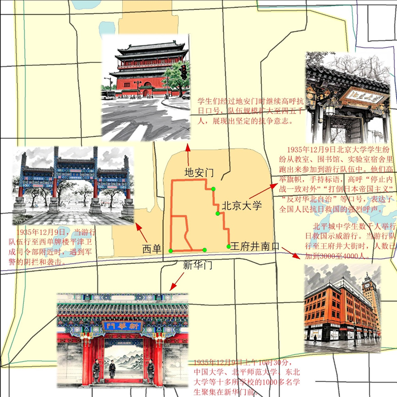

1935年12月9日，北平爆发了大规模的学生抗日救国运动。数千名学生举行示威游行，反对华北自治，要求停止内战、一致抗日。
游行队伍从新华门出发，经西长安街、西单、西四、地安门，到达沙滩北京大学，最终到王府井南口，掀起了全国抗日救亡运动的新高潮。

1935年12月9日，北平学生抗日救国大示威
1935年12月9日，北平爆发了大规模的学生抗日救国运动。数千名学生举行示威游行，反对华北自治，要求停止内战、一致抗日。
游行队伍从新华门出发，经西长安街、西单、西四、地安门，到达沙滩北京大学，最终到王府井南口，掀起了全国抗日救亡运动的新高潮。
